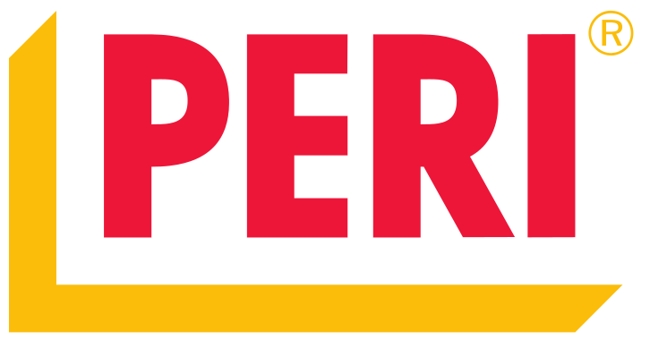

The construction industry is still using the same tools as 100 years ago. Whilst we may design digitally we still construct manually and it's this disconnect that has led to an environmentally unfriendly, inefficient construction process that produces poor quality buildings. This is both economically and environmentally unsustainable.
At Scaled Robotics our mission is to digitize construction, introducing teams of mobile robots to the construction site that work directly from the 3D model, bridging the gap between digital design and physical construction. Applying recent advances in robotics to cut out costly errors, increase quality and transition to a leaner manufacturing process.
Backed by our principle investor Peri and other industry partners, we are building the robots to transform construction.
